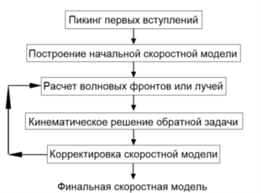

| Слой | Размер блока | Количество блоков |
|---|---|---|
| слой 1 | 5 * 5 км | 73 блока |
| слой 2 | 5 * 10 км | 73 блока |
| слой 3 | 10 * 20 км | 73 блока |
| слой 4 | 20 * 35 км | 73 блока |
| слой 5 | 35 * 50 км | 33 блока |
| слой 6 | 50 * 75 км | 33 блока |
| слой 7 | 75 * 150 км | 19 блоков |
| слой 8 | 150 * 300 км | 19 блоков |
Сейсмикалык томография маселелерин чечүүнүн тактыгынын алгоритмди тандоодон жана Р толкундарын аныктоонун тактыгынан көз карандылыгын көрсөтүүчү web-сайтты иштеп чыгуу
Киришүү
Бул бөлүмдүн максаты сейсмикалык силкинүүнүн санарип жазууларынын негизинде Кыргызстандын жер кыртышынын ылдамдыктын бир тектүү эместигин аныктоого мүмкүндүк берген колдонмо математикалык маселенин чечилишине баа берүү болуп саналат.
Методология
Токтомду баалоо үчүн синтетикалык тест моделдер ыкмасы колдонулат. Анын максаты тандалган маалыматтарды колдонуу менен белгилүү бир өлчөмдөгү аномалияларды чечүү мүмкүн деген тыянак чыгаруу болуп саналат...
Сейсмикалык томография алгоритми
Сейсмикалык томография төмөнкүдөй ишке ашырылат. Экологиялык модель ылдамдыктын маанилери көрсөтүлгөн клеткалар же түйүндөр үчүн тор түрүндө берилет...

Сейсмикалык томографиялык курулуштун алгоритми чөйрөнү блокторго бөлүүнү колдонот, мында ар бир блоктун өзүнүн параметрдик өзгөрмөлүүлүгү (жайлануу 1/V). Ишенимдүү үчүн натыйжалары үчүн чөйрөнү объективдүү параметрлештирүү маанилүү, бул талап кылат ошентип блоктор геологиялык жактан бир тектүү жана талап кылынган нерселерди камсыз кылат резолюция. Жаңы модель 396 блокту камтыйт.
×

Заключение
Создание скоростной модели литосферы,определения разрешающей способности алгоритма Сейсмотомографической инверсии